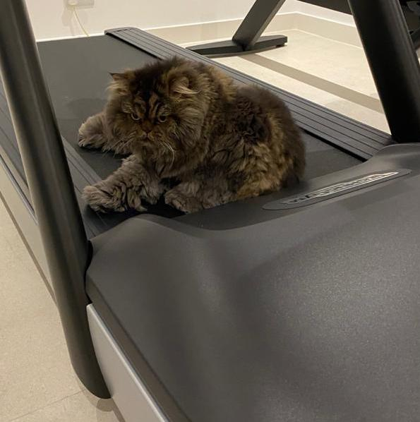

This webpage is for the Spring 2021 Journalism & Design Toolkit class as part of the Journalism+Design department at Eugene Lang College for Liberal Arts at the New School University.
I built this webpage do display my work for Journalism & Design Toolkit. Due to online school I have been staying in Dubai but I look forward to going back to New York. I added a picture of my cat as well as a link to Google of cute cats.🐈 One fact about me is that I am completely obsessed with cats!
